3rd year Design Engineering student at Imperial College London
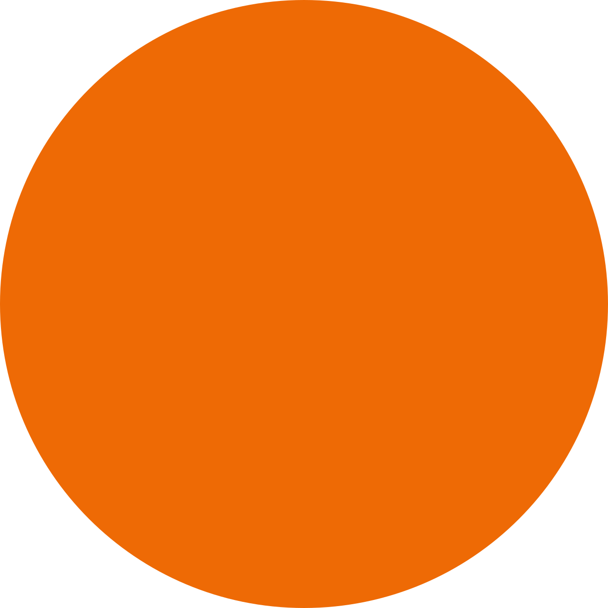
About Me!
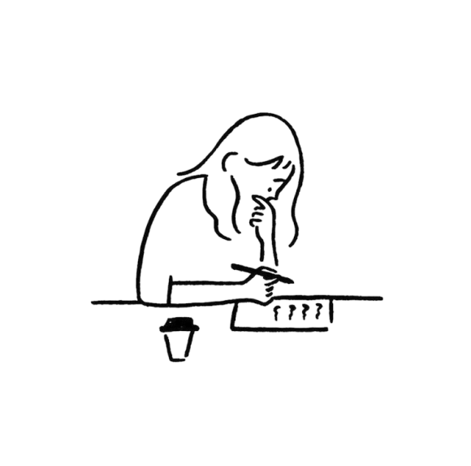
I enjoy moving between creative thinking and technical problem solving, bringing together mechanical design, electronics and software to make ideas work. I put the user at the centre of my process, testing early and using feedback to learn from insights and shape solutions around people’s needs.
Fusion 360
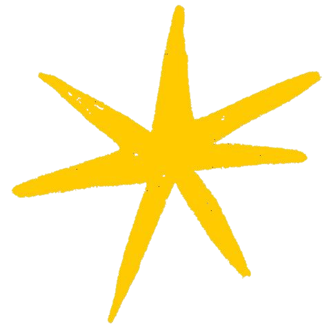
Blender
User Research
Python
MATLAB
Figma
3D Printing
Usability Testing
MicroPython
C++
Laser Cutting
Adobe CC
Ideation
Visual Storytelling
JavaScript
Fusion 360
Blender
User Research
Python
MATLAB
Figma
3D Printing
Usability Testing
MicroPython
C++
Laser Cutting
Adobe CC
Ideation
Visual Storytelling
JavaScript
Top pick
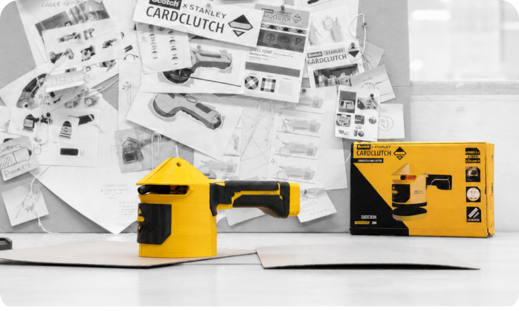
CAD
Electronics
Human Centred Design
Programming
DFM
Simulation
CardClutch
As a team, we designed CardClutch, a guided card cutter for creating custom packaging around irregular objects. We developed fully functional mechanical, electronic and software systems to combine measuring, box net generation and accurate cutting into one workflow.
Top pick
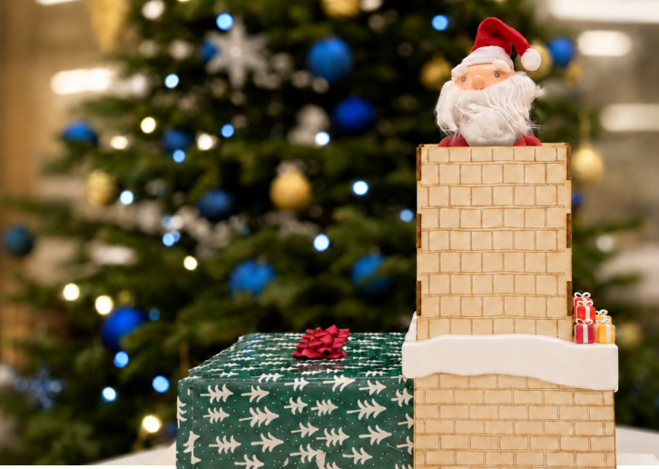
Electronics
Robotics
CAD
Programming
Human Centred Design
Santa’s Stuck!
Designed a playful interactive toy where users experiment with Santa’s reactions to discover how to help him escape the chimney. I developed the physical mechanisms and interactive system using Bela, C++ and Pure Data, combining sensors, audio, lighting and movement to create responsive behaviour.
Top pick
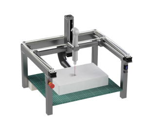
CAD
Human Centred Design
DFM
Electronics
Behind the Collection
Explored the needs, workflows and challenges of GLAM organisations. Through stakeholder interviews, observation, market research and user journey mapping, I identified patterns and opportunities for improvement, translating these insights into a physical tool for creating bespoke protective foam inserts for irregular objects.
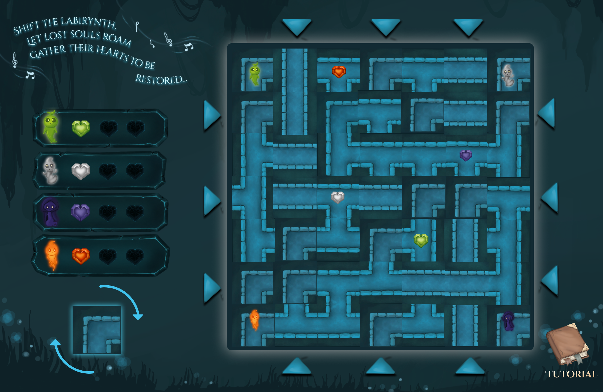
Programming
Labyrinth
Developed a 2–4 player strategy game where players shift a 7×7 maze and collect matching hearts. Built the game engine in JavaScript with dynamic tile shifting and BFS pathfinding. Hand drew the interface and character animations to add storytelling and create an indie visual style.
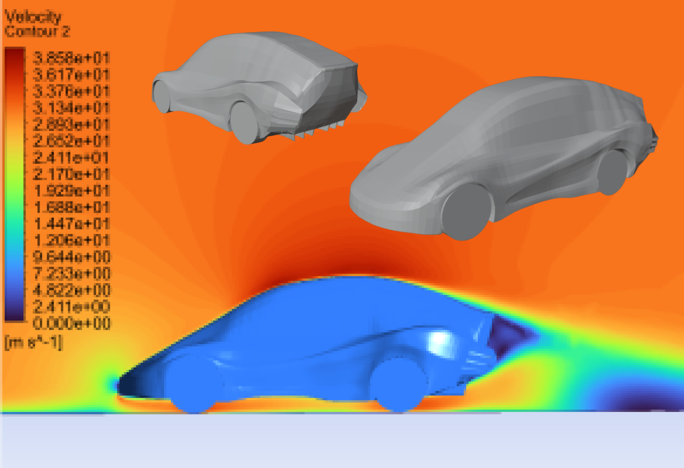
CAD
Simulation
Aerodynamic SUV
Designed and evaluated a simplified SUV geometry for real-world aerodynamic conditions, developing the CAD through benchmarking and iterative design. Using CFD, I analysed flow behaviour, drag and lift to identify key areas affecting aerodynamic performance. These findings were used to evaluate the baseline design and inform a future iteration.
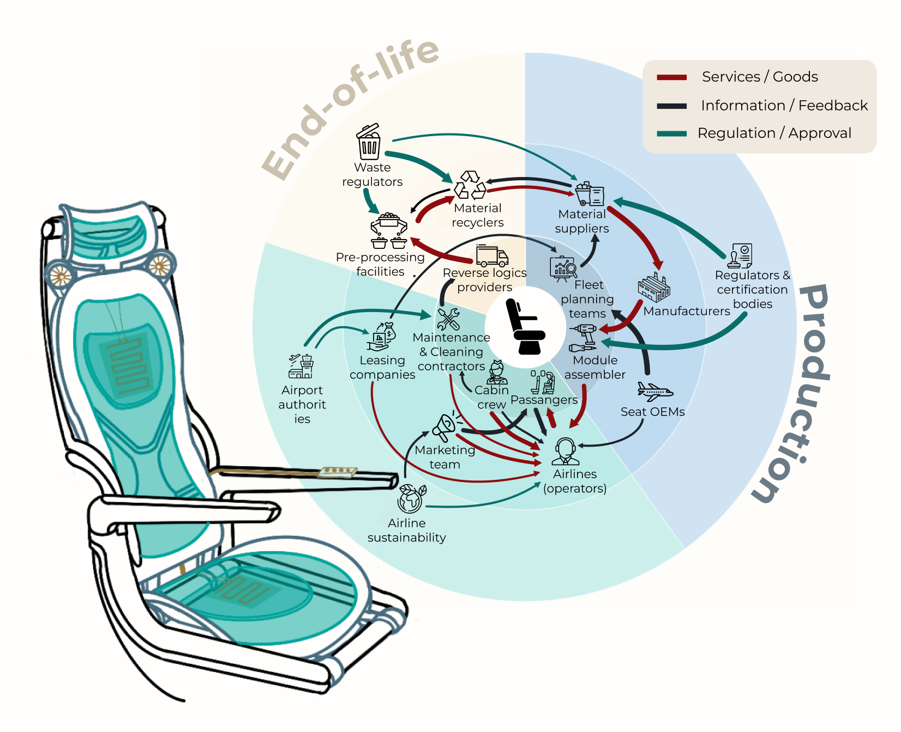
Human Centred Design
Sustainability
Sustainable Aircraft Seat
Explored the lifecycle of economy class aircraft seating through user research, teardown analysis, market research and an Eco Audit. I developed a modular comfort system compatible with existing seat frames, combining pressure zoned support, active thermal comfort and tool light disassembly for improved circularity.
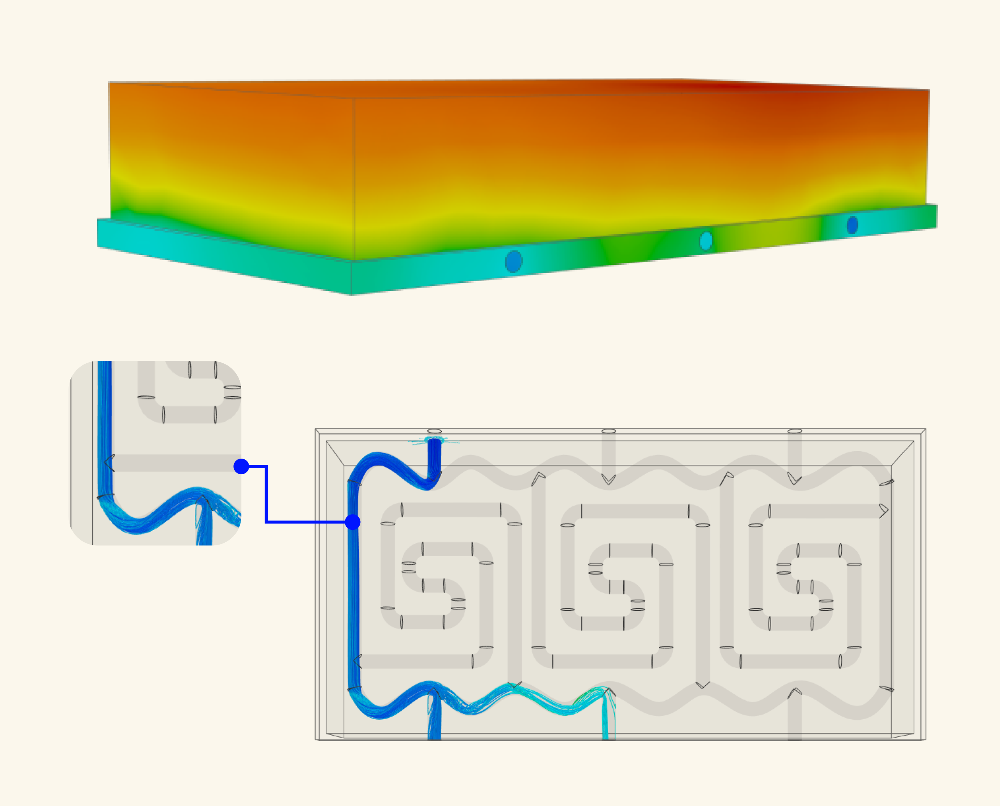
CAD
Simulation
DFM
Battery Cooling Plate
Designed and optimised a battery cooling plate for an electric vehicle fleet, balancing temperature uniformity, heat transfer, pressure drop and manufacturability. I developed and evaluated multiple channel geometries using CFD to analyse flow and thermal performance and inform each iteration.
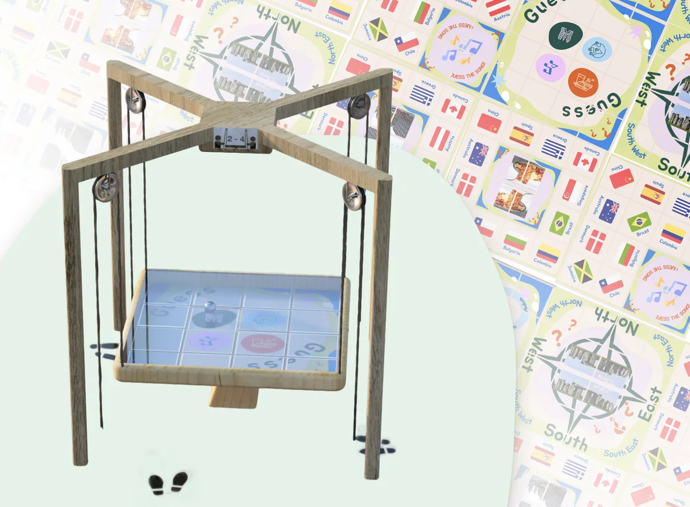
CAD
Human Centred Design
Tilt Quest
Project exploring how urban spaces can help international newcomers overcome social and cultural barriers and develop a sense of belonging. Through research, co-design and prototyping, we developed a playful, non-verbal experience using shared play, music and cultural exchange to encourage spontaneous interaction.